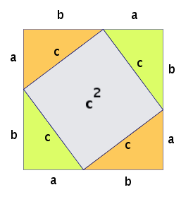

Chapter 11 Direct proof
Look back at the proof of Conjecture 8.1 in Chapter 8. This was an example of a direct proof. Direct proofs use algebra to move from \(P\) to \(Q\).
11.1 Steps
- If possible, rewrite the conjecture in the form If … then ….
- If possible, draw the map of the statement. The map is not always essential (or even easy) to draw. However for some proofs it will be invaluable!
- Define any variables that you use, for example “\(m \in \mathbb Q\)” or “\(n \in \mathbb Z, n \neq 0\).”
- If you are relying on any definitions or axioms (from our Miro board or elsewhere), you should explicitly reference them. You don’t need to explain or prove them, but by not referencing axioms and definitions you employ, you might leave your audience in the dark.
11.2 Formal definition
Simply, prove that “If \(P\) then \(Q\).”
11.3 Practice
Use these examples to practise. If it’s not in the form If … then …, make sure you rewrite it before starting the proof. Attempt the proof before checking the solution.
(#cnj:wave:) The sum of two even numbers is even.}
Rewritten conjecture : If \(a\) and \(b\) are even integers, then \(a+b\) is even.
Proof. Since \(a\) and \(b\) are even, they can be written as \[\begin{align} a &= 2k \\ b &= 2l \end{align}\] where \(k\) and \(l\) are integers. Therefore the sum of \(a\) and \(b\) is \[\begin{align} a + b &= 2k + 2l\\ &= 2(k + l) \end{align}\] by factoring out 2.
As the sum of integers equals an integer, \(k + l\) must equal some integer. Let’s call it \(m\). Therefore we have \[\begin{align} a + b &= 2m \end{align}\] which is clearly even.(#cnj:welcome:) The square of an odd number is also odd.}
Rewritten conjecture: If \(a\) is an odd integer, then \(a^2\) is odd.
(#cnj:wood:) The sum of the first \(n\) positive integers is \(\frac{n}{2}(n+1)\).
Solution. Solution: https://www.youtube.com/watch?v=aaFrAFZATKU
Exercise 11.1 Some of these conjectures are false; disprove them by finding a counterexample. Some of them are true; prove them using a direct proof.
Conjecture 11.1 : If \(a\) and \(b\) are both perfect squares, then \(ab\) is also a perfect square.
Conjecture 11.2 : (The sum of two even numbers is even.)
Conjecture 10.21 : The sum of two odd integers is even.
Conjecture 11.3 : All odd primes end with 1, 3, 7 or 9.
Conjecture 11.4 : If \(a\) and \(b\) are both odd, then the difference of their squares is even. (This means if you square two odd numbers and find the difference between these two squares, the difference will be even.)
Conjecture 11.5 : The sum of two consecutive integers is odd.
Conjecture 11.6 : The sum of three consecutive integers is odd.
Conjecture 11.7 : The sum of three consecutive integers is divisible by 3.
Conjecture 11.8 : The sum of three consecutive odd numbers is divisible by 3.
Conjecture 11.9 : The sum of two consecutive odd numbers is divisible by 4.
Conjecture 11.10 : For a right-angled triangle, the square of the hypotenuse is equal to the sum of the squares of the other two sides. This is the Pythagoras Theorem. Prove it algebraically with a direct proof using this picture:

Exercise 11.2 Some of these conjectures are false; disprove them by finding a counterexample. Some of them are true; prove them using EITHER a proof by exhaustion or a direct proof.
Conjecture 11.11 : The product of three consecutive integers is divisible by 6.
Conjecture 11.12 : There is no four-digit number that reverses its digits when multiplied by 4 (in other words, ABCD x 4 = DCBA).
Conjecture 11.13 : Summing two 3-digit numbers results in a 4-digit number.
Conjecture 11.14 : For any four consecutive integers, the difference between the product of the last two and the product of the first two of these numbers is equal to their sum.
Conjecture 11.15 : If a number is divisible by 4, then it is divisible by 2.
Conjecture 11.16 : If a number is divisible by 2, then it is divisible by 4.
Conjecture 11.17 : If \(a\) is a positive nonprime whole number and some prime number \(p\) divides \(a\), then some other prime \(q\) (\(q \neq p\)) also divides \(a\).
Conjecture 11.18 : If \(a + 4 > 0\), then \(a\) is positive.
Conjecture 11.19 : For any negative number \(a\), \(a^2 > a\).
Conjecture 11.20 : If \(a^2\) is divisible by 2, then so is \(a\).
Conjecture 11.21 : If \(a^2\) is divisible by 3, then so is \(a\).
Conjecture 11.22 : In the picture below, the larger square is twice the area of the smaller square:
Figure 11.1: The figure shows a square inscribed in a circle, which is inscribed in another square.